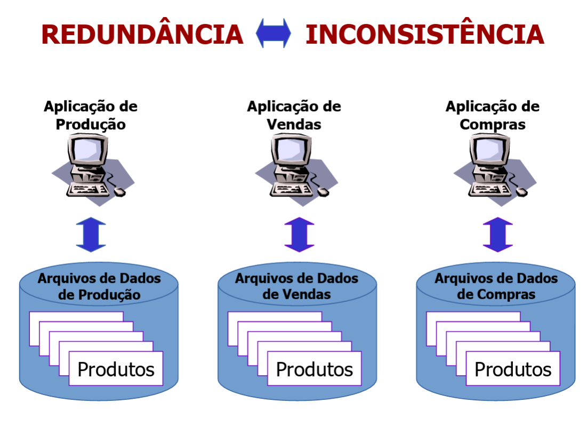

Introdução a sistemas de bancos de dados
Sistemas de informação
Para a alta evolução dos sistemas de bancos de dados tivemos antes um avanço dos próprios sistemas de informação, a partir desse ponto temos sistemas de informação baseados em gerenciamento de arquivos, onde:
- Cada unidade da organização possui seus programas e arquivos;
- Temos programas curtos para tarefas específicas;
- Dados armazenados em disco;
- Cada arquivo usa uma estrutura de dados.
Figura 1 - Esquemograma sistemas de informações
Fonte - Slides do professor Maurício
Figura 2 - Redundância e inconsistência nos sistemas de informações

Fonte - Slides do professor Maurício
Consistência de dados
- Consistência é o "estado ou caráter do que é coerente, do que tem solidez, veracidade, credibilidade, estabilidade, realidade";
- Se determinada que a informação é replicada (redundância), seu valor deve ser sempre o mesmo.
Sistemas da informação (SIs) baseados em arquivos
Como tudo no mundo da tecnologia podemos ver claramente alguns problemas nesses tipos de sistemas, alguns deles são:
- Redundância e inconsistência de de dados;
- Dificuldade de acesso aos dados;
- Isolamento de dados;
- Anomalias no acesso concorrente;
- Segurança.
Nesses tipos de sistemas de informação temos os dados gravados em disco usando estrutura de dados, ou seja, o acesso demanda conhecimento dessas estruturas de dados, chamamos isso de dependência de dados.
Dependência de dados
- Vários programas compartilhando os mesmos dados;
- Todos devem estudar e conhecer as mesmas estruturas;
- Acoplamento forte;
- Se houver uma alteração na estrutura de dados todos os programas devem ser alterados.
Mas como podemos fazer com que não tenhamos essa dependência de dados? A resposta é simples, criando um sistema que gerencie a estrutura. Veja com com as imagens abaixo, uma ilustração simplificada do funcionamento.
Figura 3 - Funcionamento do sistema gerenciador de dados

Fonte - Slides do professor Maurício
Figura 4 - SGBD (Sistema gerenciador de banco de dados)
Fonte - Slides do professor Maurício
Sistema gerenciador de banco de dados (SGBD)
- Composto por:
- Conjunto de dados
- Base de dados;
- Tabelas e índices;
- Tuplas.
- Conjunto de programas
- Acesso dos dados;
- Manipulação dos dados.
- Conjunto de dados
- É um sistema de propósito geral
- Mantém um conjunto lógico e organizado de dados;
- Armazena grande volume de dados;
- Permite busca e atualização dos dados;
- É eficiente;
- É autônomo em relação às aplicações
Figura 5 - SGBD aplicado

Fonte - Slides do professor Maurício
- Requisitos fundamentais
- Segurança
- Física (mais comum no passado)
- Lógica
- Usernames e passwords;
- Perfis de usuário.
- Integridade
- Consistência;
- Validade.
- Recuperação e tolerância a falhas
- Transações atômicas
- Registros de log
- Backup
- Controle da concorrência
Temos dentro do mundo de bancos de dados restrições de integridade. Essas restrições definem o que é válido e o que não é válido para nós dentro desse contexto, alguns exemplos de restrições de integridade são:
- Um funcionário não pode pertencer a mais de um departamento;
- O preço de venda de um produto não pode ser superior ao seu custo;
- O código de cada produto deve ser único.
Figura 6 - Componetes de um SGBD
Fonte - Slides do professor Maurício
Utilizando um SGBD
- Modelagem
- Modelo entidade/relacionamento;
- Modelo relacional.
- Definição
- SQL DDL
- Instnciação
- SQL DDL/DML
- Uso
- SQL DML
A interface dos bancos de dados é definida pela linguagem declarativa DQL(DDL+DML). Agora vamos ver masi doic conceitos procedural e declarativo:
- Procedural: Exige especificações de quais dados são necessário e como conseguimos obtê-los.
- Requer uma sequência específica de operações a serem executadas;
- Não-procedural (declarativo): Exige apenas especificação de quais dados são necessários, e não de como obtê-los.
SQL - Data Definition Language (DDL) tem um conjunto de comandos para a definição do esquema de base de dados, temos como seus principais elementos:
- create
- alter
- drop
Assim como já se pode imaginar, se podemos criar e estamos falando de banco de dados moderno, obviamente podemos manipular esses dados também, os principais elementos de manipulação de dados são
- select
- insert
- delete
- update
Mais um conccieto importante é o de metadados que também podemos chamar de dicionário de dados. São os bancos de dados do sistema, nele se armazena a descrição do sistema, metadados e restrições de segurança e integridade. Temos ainda outras denominações para esses metadados, são eles catálogo de dados, e diretório de dados.
Figura 7 e 8 - Fluxo SGBD

Fonte - Slides do professor Maurício